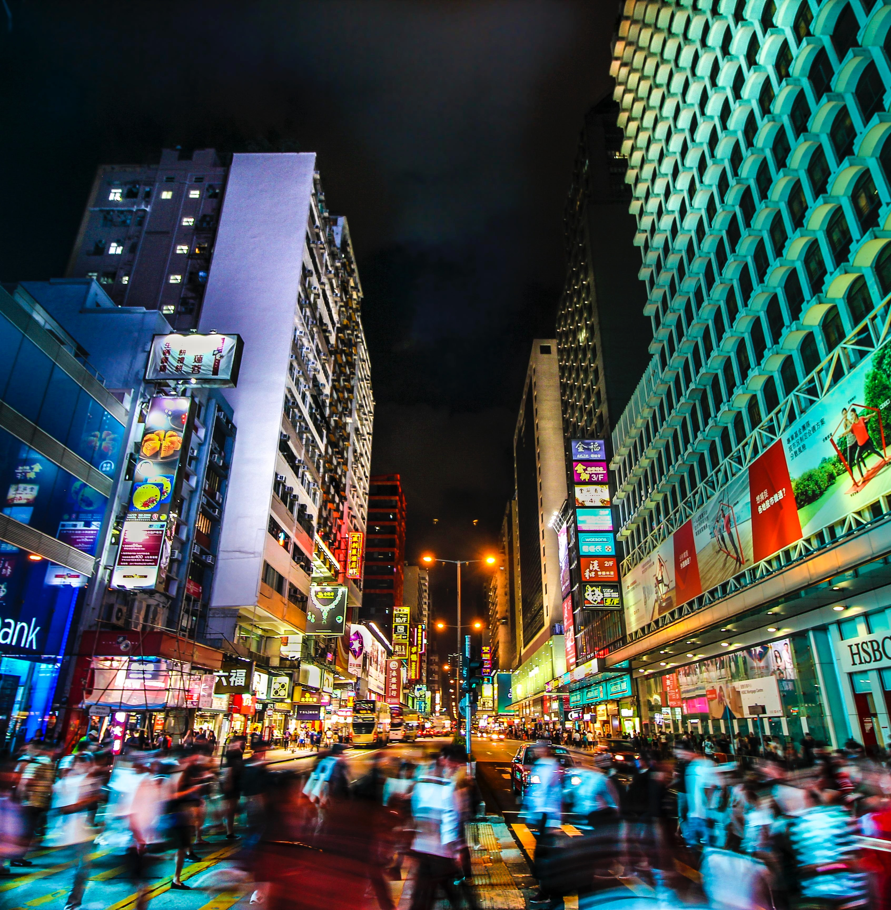

Walking out with your buys from a shop, apart from something you need instantly, might very soon become a thing of the past, even in this city’s local retail sector which is still stuck largely in the Middle Ages

They call the English a nation of shopkeepers, but the Sceptred Isle has nothing on the Pearl of the Orient for sheer retail therapy.
I can just about remember back to a geography lesson nearly 50 years ago (somewhat easier than remembering what I had for lunch) when we wandered down Lan Kwai Fong, mapping the location of metal-bashing shops, hardware stores, cooked food stalls and mom-and-pop groceries.
We marvelled that the same kind of shops all seemed to be co-located. Nowadays, functional affinity still applies, but the little shops have become bars and restaurants. Hong Kong retail been disrupted from street life into high life.
The brands have changed too, from a time when Lane Crawford hugged them all, to where the world’s best-known names, and many unknowns, sit side by side, paying some of the highest rentals in the world.
This surged at the time of the huge influx of rich mainland shoppers although, as I have previously noted, Hong Kong has recently lost its cool. Mainlanders now look to buy Gucci in Paris and Kate Spade in New York.
Not just cool. The chill wind of retail disruption has still to hit Hong Kong. Many of the larger retail chains around the world are taking a very different tack to their retail strategy, as their physical shops increasingly just become showrooms. Clicks and mortar is certainly not a new concept but it is now startling obvious in other places how it is being played out.
For the first time this summer, I found coming out of a shop with my buys to be the exception rather than the rule. Once I had identified what I wanted in terms of look, quality and price, the shop assistants would tell me that it was easier and cheaper to buy it on the internet.
"The chill wind of retail disruption has still to hit Hong Kong. Many of the larger retail chains around the world are taking a very different tack to their retail strategy, as their physical shops increasingly just become showrooms"
In return for an insignificant delivery charge, I did not have to lug it home and the large chains are happy to hold less stock in disparate locations.
Just a couple of clicks, some stress in getting the long credit card number right, and a thumb print means that you can buy anything legal from all over the world, especially in Hong Kong where we have few import restrictions.
The fact Amazon is looking at drone delivery (which to me as an air-minded private pilot still seems far-fetched) shows that internet retail is now mainline. In some urban areas around the world, online retailers even promise same day delivery – even in countries where, not long ago, a letter might take 3 days to arrive.
"The retail sector in Hong Kong is in the Middle Ages. Elsewhere, the big revolution in supermarkets has been next day delivery of your online, often discounted, shopping basket"
By these standards, the retail sector in Hong Kong is in the Middle Ages. Elsewhere, the big revolution in supermarkets has been next day delivery of your online, often discounted, shopping basket. It may be that in this city we all like carrying heavy bring-your-own shopping bags around Central – or it may be that lazy and protected supermarkets have no urgency in providing such a seamless service.
Some specialist retailers have twigged that pick and delivery works well in a crowded city – IKEA for instance. The physical location is merely a shop window. Almost as an afterthought, it has become one of the best little supermarkets in Hong Kong, breaking the grocery cartel by selling its own specialist food inside its furniture stores.
So far Hong Kong retail has been protected from the clicks and bricks disruption. Mailing the odd book or package to Hong Kong can be expensive on its own.
Elsewhere, however, it favours large chains that can afford an expensive physical showroom as a loss leader for internet sales. We have no hinterland to build the airport-sized warehouses needed to facilitate a proper internet shopping experience. And no big landlord is going to give you the space that will undercut their supermarkets.
Then I twigged – bring back some quality light fittings (made in China) this summer from a click and mortar outlet in the UK They were just perfect in quality and price.
The corollary to this is that Hong Kong is becoming increasingly exposed to a revolution by clicks and mortar. It will almost certainly come from China, where internet shopping is highly developed. Apple already has an excellent facilitation service into Hong Kong fed by their mainland warehouses. It cannot be long before local boutiques and supermarkets find their fat margins under attack.
Actually walking out with your buys in a shop, apart from something you need instantly, might become a thing of the past – as it is becoming elsewhere in the world.